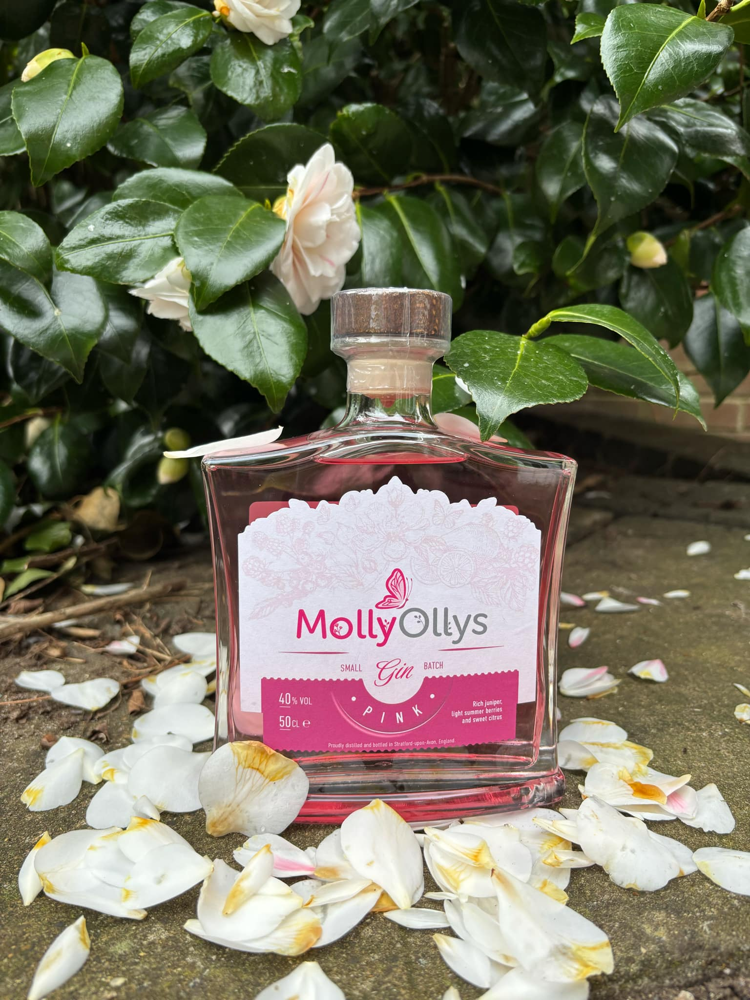

Sweet Tiger
In Progress
The Burger Society
In progress
Molly Ollys Charity
Molly Ollys is a a charity focused on making wishes come true for terminally ill children.


Green Tangerine
Green Tangerine is an independent coffee shop nestled in the heart of Crowthorne, Berkshire.